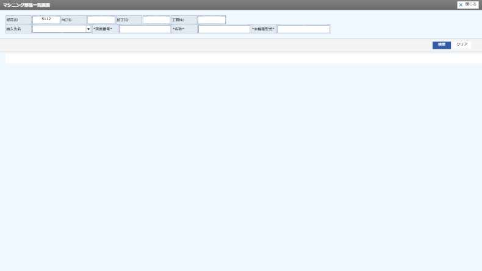

Issue Dashboard
問題・課題 可視化ダッシュボード
操作ログのルールベース自動解析結果 — 2画面 / 37ログ
最優先課題
（不明） — 🟡 ロガー初期化ミス（UNKNOWN featureId）
featureId が "UNKNOWN" のログが 3 件あります。TLogAutoInstrument.init()…
1 サマリー
全問題数
9
2画面
Critical
0
即対応必須
High
5
優先対応
Medium
2
計画対応
Low
2
余裕時対応
平均スコア
64
/ 100
解析ログ
37
件
2 画面別ヒートマップ 赤が多いほど問題が集中
MC_OPERATOR_AUTHENTICATION
ユーザ認証
UNKNOWN
（不明）
4 問題一覧（優先度順） ▶ 行クリックで詳細・スクショを展開
| 順位 | 優先度スコア | 重大度 | 画面 | カテゴリ | 説明 / 操作文脈 | 難易度 | 証拠・詳細 | 状態 |
|---|---|---|---|---|---|---|---|---|
| 1 | High |
UNKNOWN （不明） |
🟡 ロガー初期化ミス（UNKNOWN featureId） |
featureId が "UNKNOWN" のログが 3 件あります。TLogAutoInstrument.init() が未呼び出し、または resizeContents_start() に配置されています。 |
易 Low | 詳細 ▾ | Open | |
|
📋 課題詳細 課題ID
R02-UNKNOWN-1772057786083-0
ルール
R02
再現性
Always
信頼度
95%
発生回数
3回
traceId
TR-1772057495167-m2b5
🔍 ログ根拠 featureId=UNKNOWN のログ 3 件 | SCREEN_LOAD 3 件 🔧 修正提案 resizeContents_end() の末尾に TLog.screenLoad("機能ID", "画面名") と TLogAutoInstrument.init("機能ID", { screenMode: "search" }) を追加してください。 📸 スクリーンショット スクリーンショットなし（操作後に自動取得されます） |
||||||||
| 2 | High |
MC_OPERATOR_AUTHENTICATION ユーザ認証 |
🔁 ボタン重複バインド |
ボタン "TLN_1_password" が 1ms 以内に 2 回記録されています。addEventListener が複数回バインドされている可能性があります。 📍 モード:auth | URLパラメータ:{ faces-redirect=false, COLUMN_0=called_function_id_from, FORMULA_0==, VALUE_0=MC_PRODUCTS_LIST, VALUE_TO_0=, COLUMN_1=called_function_id_to, FORMULA_1==, VALUE_1=MC_MACHINING, VALUE_TO_1=, COLUMN_2=processing_id, FORMULA_2==, VALUE_2=5218, VALUE_TO_2=, COLUMN_3=mc_process_no, FORMULA_3==, VALUE_3=1, VALUE_TO_3=, COLUMN_4=parts_id, FORMULA_4==, VALUE_4=5112, VALUE_TO_4=, COLUMN_5=parts_machining_id, FORMULA_5==, VALUE_5=5218, VALUE_TO_5=, COLUMN_6=parameter_val1, FORMULA_6==, VALUE_6=1, VALUE_TO_6=, PARAM_CALL_FUNC_ID=MC_PRODUCTS_LIST, CALL_ID=MC, A_HREF_ELM_NAME=1_編集_0, WIN_H=140, WIN_W=690, WIN_POS=WIN_C_MDL, IS_CHILD_FUNC=1, CALL_AUTH=1, PARAM_FUNC_ID=MC_OPERATOR_AUTHENTICATION, INIT_SEARCH=true } | 見出し:マシニングオペレーター認証画面 | 操作:TLN_1_password | 入力:{ elementType=TEXTBOX, newValue=atomas } |
中 Medium | 詳細 ▾ | Open | |
|
📋 課題詳細 課題ID
R03-MC_OPERATOR_AUTHENTICATION-1772057786081-0
ルール
R03
再現性
Likely
信頼度
90%
発生回数
1回
traceId
TR-1772057549864-fklx
📍 操作文脈 モード:auth | URLパラメータ:{ faces-redirect=false, COLUMN_0=called_function_id_from, FORMULA_0==, VALUE_0=MC_PRODUCTS_LIST, VALUE_TO_0=, COLUMN_1=called_function_id_to, FORMULA_1==, VALUE_1=MC_MACHINING, VALUE_TO_1=, COLUMN_2=processing_id, FORMULA_2==, VALUE_2=5218, VALUE_TO_2=, COLUMN_3=mc_process_no, FORMULA_3==, VALUE_3=1, VALUE_TO_3=, COLUMN_4=parts_id, FORMULA_4==, VALUE_4=5112, VALUE_TO_4=, COLUMN_5=parts_machining_id, FORMULA_5==, VALUE_5=5218, VALUE_TO_5=, COLUMN_6=parameter_val1, FORMULA_6==, VALUE_6=1, VALUE_TO_6=, PARAM_CALL_FUNC_ID=MC_PRODUCTS_LIST, CALL_ID=MC, A_HREF_ELM_NAME=1_編集_0, WIN_H=140, WIN_W=690, WIN_POS=WIN_C_MDL, IS_CHILD_FUNC=1, CALL_AUTH=1, PARAM_FUNC_ID=MC_OPERATOR_AUTHENTICATION, INIT_SEARCH=true } | 見出し:マシニングオペレーター認証画面 | 操作:TLN_1_password | 入力:{ elementType=TEXTBOX, newValue=atomas } 🔍 ログ根拠 elementId=TLN_1_password | 時刻差=1ms | ts1=2026-02-25T22:12:29.863Z | ts2=2026-02-25T22:12:29.864Z 🔧 修正提案 resizeContents_end() が複数回呼ばれていないか確認してください。isValid フラグで初期化ガードを実装し、addEventListener の二重登録を防いでください。 📸 スクリーンショット スクリーンショットなし（操作後に自動取得されます） |
||||||||
| 3 | High |
MC_OPERATOR_AUTHENTICATION ユーザ認証 |
🔁 ボタン重複バインド |
ボタン "TLN_1_password_CALL_JAVASCRIPT" が 1ms 以内に 2 回記録されています。addEventListener が複数回バインドされている可能性があります。 📍 モード:auth | URLパラメータ:{ faces-redirect=false, COLUMN_0=called_function_id_from, FORMULA_0==, VALUE_0=MC_PRODUCTS_LIST, VALUE_TO_0=, COLUMN_1=called_function_id_to, FORMULA_1==, VALUE_1=MC_MACHINING, VALUE_TO_1=, COLUMN_2=processing_id, FORMULA_2==, VALUE_2=5218, VALUE_TO_2=, COLUMN_3=mc_process_no, FORMULA_3==, VALUE_3=1, VALUE_TO_3=, COLUMN_4=parts_id, FORMULA_4==, VALUE_4=5112, VALUE_TO_4=, COLUMN_5=parts_machining_id, FORMULA_5==, VALUE_5=5218, VALUE_TO_5=, COLUMN_6=parameter_val1, FORMULA_6==, VALUE_6=1, VALUE_TO_6=, PARAM_CALL_FUNC_ID=MC_PRODUCTS_LIST, CALL_ID=MC, A_HREF_ELM_NAME=1_編集_0, WIN_H=140, WIN_W=690, WIN_POS=WIN_C_MDL, IS_CHILD_FUNC=1, CALL_AUTH=1, PARAM_FUNC_ID=MC_OPERATOR_AUTHENTICATION, INIT_SEARCH=true } | 見出し:マシニングオペレーター認証画面 | 操作:TLN_1_password_CALL_JAVASCRIPT | 入力:{ elementType=BUTTON, buttonLabel=ユーザー認証, formSnapshot=[object Object] } |
中 Medium | 📸 1枚 ▾ | Open | |
|
📋 課題詳細 課題ID
R03-MC_OPERATOR_AUTHENTICATION-1772057786081-1
ルール
R03
再現性
Likely
信頼度
90%
発生回数
1回
traceId
TR-1772057550014-z57x
📍 操作文脈 モード:auth | URLパラメータ:{ faces-redirect=false, COLUMN_0=called_function_id_from, FORMULA_0==, VALUE_0=MC_PRODUCTS_LIST, VALUE_TO_0=, COLUMN_1=called_function_id_to, FORMULA_1==, VALUE_1=MC_MACHINING, VALUE_TO_1=, COLUMN_2=processing_id, FORMULA_2==, VALUE_2=5218, VALUE_TO_2=, COLUMN_3=mc_process_no, FORMULA_3==, VALUE_3=1, VALUE_TO_3=, COLUMN_4=parts_id, FORMULA_4==, VALUE_4=5112, VALUE_TO_4=, COLUMN_5=parts_machining_id, FORMULA_5==, VALUE_5=5218, VALUE_TO_5=, COLUMN_6=parameter_val1, FORMULA_6==, VALUE_6=1, VALUE_TO_6=, PARAM_CALL_FUNC_ID=MC_PRODUCTS_LIST, CALL_ID=MC, A_HREF_ELM_NAME=1_編集_0, WIN_H=140, WIN_W=690, WIN_POS=WIN_C_MDL, IS_CHILD_FUNC=1, CALL_AUTH=1, PARAM_FUNC_ID=MC_OPERATOR_AUTHENTICATION, INIT_SEARCH=true } | 見出し:マシニングオペレーター認証画面 | 操作:TLN_1_password_CALL_JAVASCRIPT | 入力:{ elementType=BUTTON, buttonLabel=ユーザー認証, formSnapshot=[object Object] } 🔍 ログ根拠 elementId=TLN_1_password_CALL_JAVASCRIPT | 時刻差=1ms | ts1=2026-02-25T22:12:30.013Z | ts2=2026-02-25T22:12:30.014Z 🔧 修正提案 resizeContents_end() が複数回呼ばれていないか確認してください。isValid フラグで初期化ガードを実装し、addEventListener の二重登録を防いでください。 📸 スクリーンショット 1枚 — クリックで拡大 📸 AFTER — 操作結果

2026-02-25T22-12-32-420Z_MC_OPERATOR_AUTHENTICATION_TLN_1_password_CALL_JAVASCRIPT_AFTER_TR-1772057550014-z57x.jpg |
||||||||
| 4 | High |
MC_OPERATOR_AUTHENTICATION ユーザ認証 |
🔁 ボタン重複バインド |
ボタン "TLN_1_マシニング情報" が 1ms 以内に 2 回記録されています。addEventListener が複数回バインドされている可能性があります。 📍 モード:auth | URLパラメータ:{ faces-redirect=false, COLUMN_0=called_function_id_from, FORMULA_0==, VALUE_0=MC_PRODUCTS_LIST, VALUE_TO_0=, COLUMN_1=called_function_id_to, FORMULA_1==, VALUE_1=MC_MACHINING, VALUE_TO_1=, COLUMN_2=processing_id, FORMULA_2==, VALUE_2=5218, VALUE_TO_2=, COLUMN_3=mc_process_no, FORMULA_3==, VALUE_3=1, VALUE_TO_3=, COLUMN_4=parts_id, FORMULA_4==, VALUE_4=5112, VALUE_TO_4=, COLUMN_5=parts_machining_id, FORMULA_5==, VALUE_5=5218, VALUE_TO_5=, COLUMN_6=parameter_val1, FORMULA_6==, VALUE_6=1, VALUE_TO_6=, PARAM_CALL_FUNC_ID=MC_PRODUCTS_LIST, CALL_ID=MC, A_HREF_ELM_NAME=1_編集_0, WIN_H=140, WIN_W=690, WIN_POS=WIN_C_MDL, IS_CHILD_FUNC=1, CALL_AUTH=1, PARAM_FUNC_ID=MC_OPERATOR_AUTHENTICATION, INIT_SEARCH=true } | 見出し:マシニングオペレーター認証画面 | 操作:TLN_1_マシニング情報 | 入力:{ elementType=BUTTON, buttonLabel=マシニング情報, formSnapshot=[object Object] } |
中 Medium | 詳細 ▾ | Open | |
|
📋 課題詳細 課題ID
R03-MC_OPERATOR_AUTHENTICATION-1772057786081-2
ルール
R03
再現性
Likely
信頼度
90%
発生回数
1回
traceId
TR-1772057558077-2ubg
📍 操作文脈 モード:auth | URLパラメータ:{ faces-redirect=false, COLUMN_0=called_function_id_from, FORMULA_0==, VALUE_0=MC_PRODUCTS_LIST, VALUE_TO_0=, COLUMN_1=called_function_id_to, FORMULA_1==, VALUE_1=MC_MACHINING, VALUE_TO_1=, COLUMN_2=processing_id, FORMULA_2==, VALUE_2=5218, VALUE_TO_2=, COLUMN_3=mc_process_no, FORMULA_3==, VALUE_3=1, VALUE_TO_3=, COLUMN_4=parts_id, FORMULA_4==, VALUE_4=5112, VALUE_TO_4=, COLUMN_5=parts_machining_id, FORMULA_5==, VALUE_5=5218, VALUE_TO_5=, COLUMN_6=parameter_val1, FORMULA_6==, VALUE_6=1, VALUE_TO_6=, PARAM_CALL_FUNC_ID=MC_PRODUCTS_LIST, CALL_ID=MC, A_HREF_ELM_NAME=1_編集_0, WIN_H=140, WIN_W=690, WIN_POS=WIN_C_MDL, IS_CHILD_FUNC=1, CALL_AUTH=1, PARAM_FUNC_ID=MC_OPERATOR_AUTHENTICATION, INIT_SEARCH=true } | 見出し:マシニングオペレーター認証画面 | 操作:TLN_1_マシニング情報 | 入力:{ elementType=BUTTON, buttonLabel=マシニング情報, formSnapshot=[object Object] } 🔍 ログ根拠 elementId=TLN_1_マシニング情報 | 時刻差=1ms | ts1=2026-02-25T22:12:38.076Z | ts2=2026-02-25T22:12:38.077Z 🔧 修正提案 resizeContents_end() が複数回呼ばれていないか確認してください。isValid フラグで初期化ガードを実装し、addEventListener の二重登録を防いでください。 📸 スクリーンショット スクリーンショットなし（操作後に自動取得されます） |
||||||||
| 5 | High |
MC_OPERATOR_AUTHENTICATION ユーザ認証 |
📡 ボタン押下後API無応答 |
ボタン "BUTTON_MDL_R:0:POS_SEARCH_BTN" 押下後 3秒以内にBACKENDログが記録されていません。REST API呼び出しが失敗しているか、レスポンス取得コードが未実装の可能性があります。 📍 モード:auth | URLパラメータ:{ PARAM_FUNC_ID=MC_PRODUCTS_LIST, CALL_ID=MENU, FUNC_ID=MC_PRODUCTS_LIST, MENU_GROUP_ID=IMOTO_MC_BASICS, A_HREF_ELM_NAME=FUNC_LINK_12 } | 操作:BUTTON_MDL_R:0:POS_SEARCH_BTN | 入力:{ elementType=BUTTON, buttonLabel=検索, formSnapshot=[object Object] } |
難 High | 📸 2枚 ▾ | Open | |
|
📋 課題詳細 課題ID
R05-MC_OPERATOR_AUTHENTICATION-1772057786082-0
ルール
R05
再現性
Sometimes
信頼度
70%
発生回数
1回
traceId
TR-1772057503150-wtkg
📍 操作文脈 モード:auth | URLパラメータ:{ PARAM_FUNC_ID=MC_PRODUCTS_LIST, CALL_ID=MENU, FUNC_ID=MC_PRODUCTS_LIST, MENU_GROUP_ID=IMOTO_MC_BASICS, A_HREF_ELM_NAME=FUNC_LINK_12 } | 操作:BUTTON_MDL_R:0:POS_SEARCH_BTN | 入力:{ elementType=BUTTON, buttonLabel=検索, formSnapshot=[object Object] } 🔍 ログ根拠 UI_CLICK elementId=BUTTON_MDL_R:0:POS_SEARCH_BTN | ts=2026-02-25T22:11:43.173Z | traceId=TR-1772057503150-wtkg | 3秒以内BACKEND=なし 🔧 修正提案 ブラウザのF12 > Networkタブで実際にREST APIが呼ばれているか確認してください。PrimeFaces AJAXのコールバック内にTLog.backend()の記録を追加してください。 📸 スクリーンショット 2枚 — クリックで拡大 📸 BEFORE — 操作直前
画像未取得 '"
/>
2026-02-25T22-11-44-026Z_MC_OPERATOR_AUTHENTICATION_BUTTON_MDL_R:0:POS_SEARCH_BTN_BEFORE_TR-1772057503150-wtkg.jpg 📸 AFTER — 操作結果

2026-02-25T22-11-45-597Z_MC_OPERATOR_AUTHENTICATION_BUTTON_MDL_R:0:POS_SEARCH_BTN_AFTER_TR-1772057503150-wtkg.jpg |
||||||||
| 6 | Medium |
MC_OPERATOR_AUTHENTICATION ユーザ認証 |
🔄 画面重複ロード |
SCREEN_LOAD が 72ms 以内に2回記録されています。resizeContents_end() が複数回呼ばれているか、isValid ガードが正しく機能していない可能性があります。 📍 モード:auth | URLパラメータ:{ PARAM_FUNC_ID=MC_PRODUCTS_LIST, CALL_ID=MENU, FUNC_ID=MC_PRODUCTS_LIST, MENU_GROUP_ID=IMOTO_MC_BASICS, A_HREF_ELM_NAME=FUNC_LINK_12 } |
中 Medium | 📸 2枚 ▾ | Open | |
|
📋 課題詳細 課題ID
R07-MC_OPERATOR_AUTHENTICATION-1772057786082-0
ルール
R07
再現性
Likely
信頼度
85%
発生回数
1回
traceId
TR-1772057503800-b62j
📍 操作文脈 モード:auth | URLパラメータ:{ PARAM_FUNC_ID=MC_PRODUCTS_LIST, CALL_ID=MENU, FUNC_ID=MC_PRODUCTS_LIST, MENU_GROUP_ID=IMOTO_MC_BASICS, A_HREF_ELM_NAME=FUNC_LINK_12 } 🔍 ログ根拠 SCREEN_LOAD 2回 | diff=72ms | ts1=2026-02-25T22:11:43.728Z | ts2=2026-02-25T22:11:43.800Z 🔧 修正提案 resizeContents_end() にisValidフラグによる実行ガードが実装されているか確認してください。TALONのライフサイクル上、resizeContents_end() が複数回呼ばれることがあります。 📸 スクリーンショット 2枚 — クリックで拡大 🖥 SCREEN_LOAD — 初期表示

2026-02-25T22-11-44-890Z_MC_PRODUCTS_LIST_SCREEN_LOAD_TR-1772057503728-pee0.jpg 🖥 SCREEN_LOAD — 初期表示

2026-02-25T22-11-44-858Z_MC_PRODUCTS_LIST_SCREEN_LOAD_TR-1772057503800-b62j.jpg |
||||||||
| 7 | Medium |
UNKNOWN （不明） |
🔄 画面重複ロード |
SCREEN_LOAD が 1ms 以内に2回記録されています。resizeContents_end() が複数回呼ばれているか、isValid ガードが正しく機能していない可能性があります。 |
中 Medium | 詳細 ▾ | Open | |
|
📋 課題詳細 課題ID
R07-UNKNOWN-1772057786083-0
ルール
R07
再現性
Likely
信頼度
85%
発生回数
1回
traceId
TR-1772057495168-j7ge
🔍 ログ根拠 SCREEN_LOAD 2回 | diff=1ms | ts1=2026-02-25T22:11:35.167Z | ts2=2026-02-25T22:11:35.168Z 🔧 修正提案 resizeContents_end() にisValidフラグによる実行ガードが実装されているか確認してください。TALONのライフサイクル上、resizeContents_end() が複数回呼ばれることがあります。 📸 スクリーンショット スクリーンショットなし（操作後に自動取得されます） |
||||||||
| 8 | Low |
UNKNOWN （不明） |
⚙️ 画面モード未設定（v2.0未対応） |
全ログで context.screenMode が "unknown" のままです。TLogAutoInstrument.init() の第2引数 { screenMode: "..." } が未設定です。 |
易 Low | 詳細 ▾ | Open | |
|
📋 課題詳細 課題ID
R11-UNKNOWN-1772057786083-0
ルール
R11
再現性
Always
信頼度
80%
発生回数
1回
🔍 ログ根拠 context付きログ 3 件中、screenMode設定なし 100% 🔧 修正提案 init() の第2引数に { screenMode: "search" } など画面のモードを指定してください。例: TLogAutoInstrument.init("MC_PRODUCTS_LIST", { screenMode: "search" }) 📸 スクリーンショット スクリーンショットなし（操作後に自動取得されます） |
||||||||
| 9 | Low |
UNKNOWN （不明） |
📊 ログ取得量過少 |
画面ロードは記録されていますが、操作ログ（UI_CLICK）が 0 件しか取得できていません。ロガー設定の確認または操作テストが不足している可能性があります。 |
易 Low | 詳細 ▾ | Open | |
|
📋 課題詳細 課題ID
R10-UNKNOWN-1772057786083-0
ルール
R10
再現性
Unknown
信頼度
60%
発生回数
1回
traceId
TR-1772057495167-m2b5
🔍 ログ根拠 SCREEN_LOAD=3件 | UI_CLICK=0件（期待値: 5件以上） 🔧 修正提案 TLogAutoInstrument.init() が正しく設定されているか確認してください。また実際に画面上のボタンや入力フィールドを操作してからログを確認してください。 📸 スクリーンショット スクリーンショットなし（操作後に自動取得されます） |
||||||||
5 検出ルール一覧 Claude API 不使用・完全ルールベース
type=ERROR のエントリを直接検出
featureId=UNKNOWN のログが存在する場合
同一 elementId が 10ms 以内に複数記録
SEARCH_RESULT の resultCount が「取得不可」
処理系ボタン後3秒以内に BACKEND ログなし
100ms 以内に BACK 系ボタンが3回以上
1秒以内に SCREEN_LOAD が2回以上
BACKEND の status !== SUCCESS
クリアボタンの formSnapshot に値が残存
SCREEN_LOAD はあるが UI_CLICK が5件未満
全ログで context.screenMode が未設定（v2.0以前）
6 優先度スコア算出式
PriorityScore = (重大度 × 40) + (再現性 × 20) + (頻度 × 20) + (信頼度 × 20)
重大度（重み）
Critical: 1.0
High: 0.8
Medium: 0.5
Low: 0.2
再現性（重み）
Always: 1.0
Likely: 0.75
Sometimes: 0.5
Unknown: 0.3
頻度（自動算出）
3回以上: 1.0
2回: 0.7
1回: 0.4
信頼度（ルール設定）
ERRORログ: 0.99
重複バインド: 0.90
低カバレッジ: 0.60